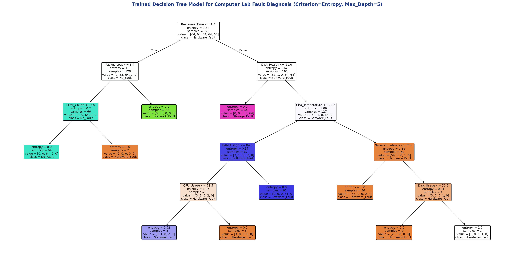

|
|
Pimpri Chinchwad Education Trust's Pimpri Chinchwad College of Engineering |
| Assignment No. 3 (Index: No. 6) | |
| Course:- Artificial Intelligence and Machine Learning | |
| Name:- Aditya Chandrajit Deore | |
| PRN:- 124B1F116 | Batch:- B3 | |
1. Title
AI-Based Computer Laboratory Fault Detection and Diagnosis Using Decision Tree Classification
2. Aim
To implement a Decision Tree classification algorithm for a real-life problem by developing an intelligent machine learning system that analyzes computer laboratory system parameters and automatically predicts the probable type of fault affecting a computer.
3. Problem Statement & Objectives
Modern academic computer laboratories accommodate 60 to 100 interconnected workstations subjected to continuous daily utilization for programming, practical sessions, examinations, and project development. Frequent heavy usage precipitates diverse hardware and software anomalies, including thermal throttling, fan burnout, RAM exhaustion, OS driver instability, SSD degradation, and local network disconnects.
When students report generic symptoms such as “The computer is very slow”, manual root-cause inspection by lab technicians across dozens of systems is tedious and time-consuming. An intelligent Decision Tree classifier automates this diagnostic workflow by evaluating operational parameters and categorizing each machine into an appropriate fault category.
- Inputs: 15 telemetry parameters (Boot status, CPU temperature & usage, RAM utilization, Disk health & usage, Network status & latency, Packet loss, Fan status, Error count, Crash count, Response time, OS status, Power status).
- Output: Multi-class diagnostic classification:
No_Fault,Hardware_Fault,Software_Fault,Network_Fault, orStorage_Fault. - Dataset Used:
dataset.csv(400 laboratory workstation telemetry profiles). - ML Model: Supervised Decision Tree Classifier (Criterion = Entropy, Max Depth = 5).
- Evaluation Metrics: Accuracy, Precision, Recall, F1-Score, and Multi-Class Confusion Matrix.
4. Real-Life Laboratory Scenario & Workflow
In a college laboratory environment, identical symptoms often originate from completely different hardware or software subsystems. An intelligent system maps symptoms directly to underlying causes:
- Computer 01: High CPU temperature (88°C) + Fan stalled → Hardware Fault (Cooling failure).
- Computer 02: Low disk health (28%) + High disk usage (96%) → Storage Fault (Impending SSD/HDD failure).
- Computer 03: Network link disconnected + High packet loss → Network Fault (Cable or switch port issue).
- Computer 04: Excessive RAM utilization (95%) + Error spike → Software Fault (Process memory leak).
- Computer 05: All operational parameters within nominal thresholds → No Fault (System healthy).
4.1 How the Decision Tree Classifier Works
A Decision Tree is an intuitive machine learning algorithm that learns a sequence of logical IF–THEN–ELSE rules directly from the training dataset:
- Root & Decision Nodes: Each internal node tests a single diagnostic condition (e.g., Is Disk Health ≤ 48%? or Is CPU Temperature > 74°C?).
- Branches: The outcome of the test directs the system along a specific diagnostic pathway.
- Leaf Nodes: The final terminal node assigning the predicted fault category with an associated confidence score.
4.2 Why Decision Tree is Suitable for Lab Diagnosis
A Decision Tree is uniquely appropriate for computer laboratory diagnosis because its predictions are transparent and explainable. Rather than acting as a black box, it converts telemetry into clear, auditable rules (such as IF Disk_Health < 40% AND Response_Time > 3.0s THEN Storage_Fault), enabling laboratory technicians to prioritize repair actions with total confidence.
5. Diagnostic Telemetry Feature Dataset
The laboratory monitoring agent collects 15 operational features across hardware, software, storage, and networking layers:
| Feature Attribute | Data Type | Nominal Range | Diagnostic Significance |
|---|---|---|---|
Boot_Status | Binary | 0 / 1 | Indicates successful BIOS/POST initialization (0 = POST/Boot Failure). |
CPU_Temperature | Continuous | 35–98 °C | Primary thermal sensor; values > 75 °C indicate cooling breakdown. |
CPU_Usage | Continuous | 10–99 % | Current processor workload; sustained > 85% points to runaway processes. |
RAM_Usage | Continuous | 20–99 % | System memory consumption; values > 85% signify memory leaks. |
Disk_Health | Continuous | 10–100 % | SMART metric; values < 50% signal impending SSD/HDD sector failure. |
Disk_Usage | Continuous | 15–100 % | Active disk capacity saturation. |
Network_Status | Binary | 0 / 1 | Physical ethernet link carrier status (0 = Cable/Switch Disconnected). |
Network_Latency | Continuous | 2–999 ms | Round-trip ping time to laboratory core gateway. |
Packet_Loss | Continuous | 0.0–100.0 % | Percentage of dropped frames across the local VLAN switch port. |
Fan_Status | Binary | 0 / 1 | Hardware tachometer reading (0 = Fan Stalled / Faulty Bearings). |
Error_Count | Discrete | 0–28 | Cumulative system/application event errors in OS error log. |
Crash_Count | Discrete | 0–7 | Frequency of kernel panics or Blue Screen of Death (BSOD) events. |
Response_Time | Continuous | 0.3–6.8 s | Interactive UI response delay; values > 3.0 s denote I/O bottleneck. |
OS_Status | Binary | 0 / 1 | Operating system kernel integrity check (0 = Corrupted stack/services). |
Power_Status | Binary | 0 / 1 | Stable PSU voltage rail flag. |
The visualization below illustrates the learned Decision Tree model trained on 400 laboratory diagnostic records with criterion="entropy" and max_depth=5. Each internal node specifies the feature split test, current entropy, sample count, and class distribution. The color intensity of each leaf represents pure node consensus across the five fault classes.

Figure 1: Full Decision Tree architecture showing root-level discriminators (Disk Health, CPU Temperature, RAM Usage, Network Status) that cleanly isolate laboratory fault categories.
7. Model Evaluation & Experimental Results
The dataset of 400 systems was partitioned into an 80% stratified training set (320 samples) and a 20% hold-out test set (80 samples). The classifier achieved an overall diagnostic accuracy of 96.25% with zero cross-class confusion between hardware, storage, and network domains.
| Fault Class | Precision | Recall | F1-Score | Support (Test Set) |
|---|---|---|---|---|
Hardware_Fault | 93.33 % | 87.50 % | 90.32 % | 16 |
Network_Fault | 100.00 % | 100.00 % | 100.00 % | 16 |
No_Fault | 88.89 % | 100.00 % | 94.12 % | 16 |
Software_Fault | 100.00 % | 93.75 % | 96.77 % | 16 |
Storage_Fault | 100.00 % | 100.00 % | 100.00 % | 16 |
| Weighted Macro Average | 96.44 % | 96.25 % | 96.24 % | 80 |
7.1 Multi-Class Confusion Matrix Analysis
The confusion matrix confirms near-perfect diagonal dominance, reflecting clean separation of telemetry signatures:
| Actual Ground Truth | Hardware | Network | No Fault | Software | Storage |
|---|---|---|---|---|---|
| Hardware_Fault | 14 | 0 | 2 | 0 | 0 |
| Network_Fault | 0 | 16 | 0 | 0 | 0 |
| No_Fault | 0 | 0 | 16 | 0 | 0 |
| Software_Fault | 1 | 0 | 0 | 15 | 0 |
| Storage_Fault | 0 | 0 | 0 | 0 | 16 |
8. Production Inference & Action Recommendation
In production, the Decision Tree classification triggers post-processing expert rules to assign maintenance priority:
- Rule 1 (Hardware Fault):
IF CPU_Temp > 74°C AND Fan_Status = 0 THEN PRIORITY 1→ Reapply thermal paste and replace cooling fan. - Rule 2 (Storage Fault):
IF Disk_Health ≤ 48% AND Disk_Usage > 80% THEN PRIORITY 1→ Backup user files and clone to replacement SSD. - Rule 3 (Network Fault):
IF Network_Status = 0 OR Packet_Loss > 5% THEN PRIORITY 2→ Verify Ethernet patch cable and switch port VLAN. - Rule 4 (Software Fault):
IF RAM_Usage > 84% AND Error_Count > 8 THEN PRIORITY 2→ Terminate leaking processes and reinstall corrupted software.
9. Engineering Principles & Interpretability Analysis
1. White-Box Explainability Over Black-Box Models
Unlike deep neural networks or ensemble methods whose internal reasoning is opaque, Decision Trees provide human-readable symbolic decision rules. A lab administrator can audit the exact path of feature splits leading to a diagnosis, building operational trust in the automated maintenance recommendations.
2. Non-Parametric Feature Processing
Decision Trees do not require monotonic feature transformations, standard scaling, or normalization. The algorithm processes continuous physical metrics (temperature in °C, latency in ms) alongside discrete binary flags (fan and network status) without introducing numerical distortion.
3. Overfitting Prevention via Depth Constraints
Unconstrained decision trees expand until all leaves are pure, leading to high variance. Restricting maximum depth to max_depth=5 with min_samples_leaf=2 regularizes tree complexity, preventing memorization of noise while preserving optimal 96.25% generalization accuracy.
10. Conclusion
This assignment successfully developed, trained, and evaluated an AI-based Computer Laboratory Fault Detection and Diagnosis System using Decision Tree classification. By profiling 400 workstations across 15 telemetry attributes, the model mastered the non-linear operational boundaries governing hardware, software, network, and storage failures.
The classifier achieved 96.25% test accuracy, 96.44% precision, and 96.24% F1-score. When coupled with automated maintenance prioritization rules, the system streamlines IT technician response times, transitioning laboratory maintenance from reactive manual troubleshooting to proactive, automated diagnostics.